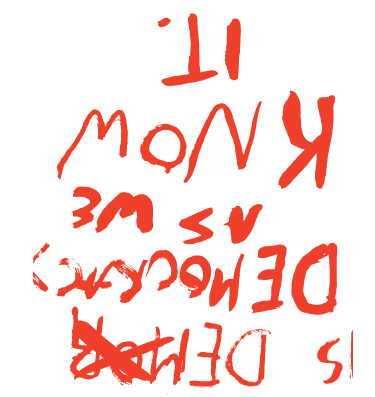

“Laws are always useful to those who possess and injurious to those that have nothing”
Jean-Jacques Rousseau
1790 ad
French
Revolution
As a result of enlightenment thinking and the success of the revolution in the Americas. The French Revolution peaked in the storming of the Bastille and resulted in a new constitution.
Old ideas about tradition and hierarchy regarding monarchs, aristocrats, and the Catholic Church were abruptly overthrown under the mantra of "Liberté, égalité, fraternité," meaning liberty, equality and fraternity.
1804 ad
Napoleon
Following ten years of revolutionary war Napoleon staged a coup taking power and appointing himself emperor. Napoleon exteneded the French Empire as far as Moscow before being defeated.
As is common in history, revolutions often lead to the rule of an even stronger power.
1865 ad
American Civil War
Besides resulting in the Emancipation Proclamation and freeing of slaves, the Civil War strengthened federal and centralized government in the U.S
The Civil War was also one of the first industrial wars with the extensive use of railroads, the telegraph, steamships, and mass produced weapons.
1890 ad
Battle of
Wounded Knee
The Massacre marked the end of the American Indian Wars, in which Native Americans where removed from their lands in order for the federal government to claim territories from coast-to-coast.
Reservations created for Native Americans today often have high rates of alcoholism, suicide, and poverty, and the lowest life expectancies in the U.S
1804 ad
Industrial Revolution
Transition from hand-made means of production to industrial. The Industrial Revolution affected nearly every aspect of daily life in some way, creating new social classes such as the worker as well.
1804 ad
Haitian Revolution
The only example of a slave revolt leading to the formation of a state. However following the revolt a vast difference in wealth and two distinct classes remained.

“Is a democracy, such as we know it, the last improvement possible in government?”
Henry David Thoreau